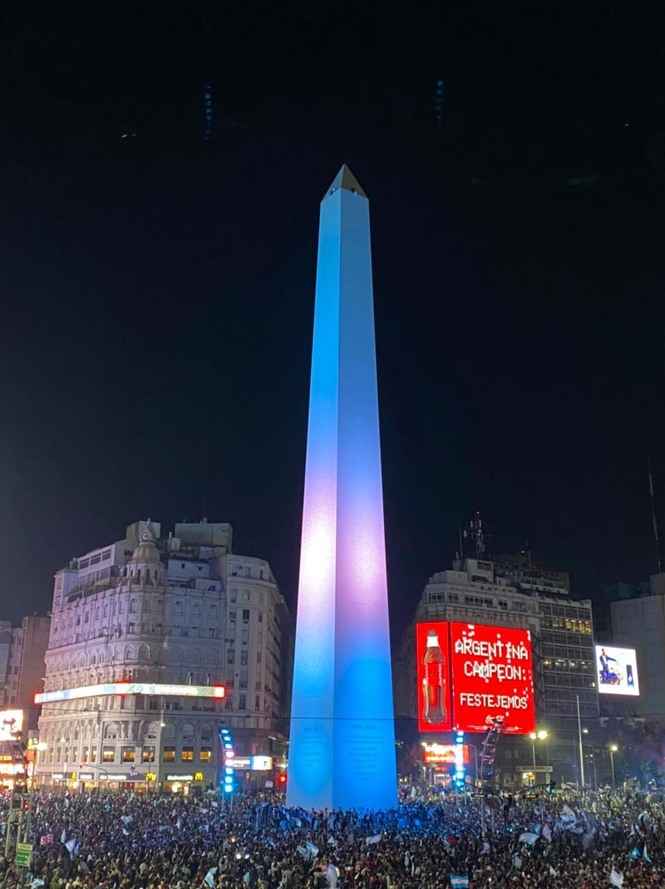

El Obelisco, se ubica en la nación soberana de Argentina, América del Sur, más precisamente en su capital, la provincia de Buenos Aires.
Obra del arquitecto Alberto Prebisch, fue construido en el año 1936, siendo inaugurado el día 23 de mayo.
Ubicado en la intersección de las Avenidas Corrientes y 9 de Julio, es hoy considerado uno de los íconos de la Ciudad, siendo centro recurrente de manifestaciones y festejos.
La altura de este monumento es de 67,5 metros, y posee solo una entrada. Por medio de una escalera marinera de 206 escalones, se arriba a la cúspide de la misma, la cual posee 4 ventanas.
En sus cercanías se encuentran teatros como el Gran Rex y el Luna Park, antaño famosos por recitales y veladas de boxeo.